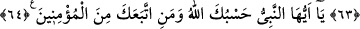
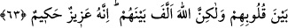

SANA ALLAH VE
MÜ’MİNLER YETER
62. Eğer sana hile yapmak isterlerse (korkma) Allah sana yeter. O ki, yardımıyla
seni ve müminleri destekledi.
63. Ve onların kalblerinin arasını uzlaştırdı. Sen yeryüzünde bulunan her şeyi
verseydin, yine onların kalblerinin arasını uzlaştıramazdın; fakat Allah, onların
arasını uzlaştırdı. Çünkü O, daima üstündür, hüküm ve hikmet sahibidir.
64. Ey peygamber, Allah sana ve sana tâbi olan müminlere yeter.
“Eğer” senden sulh yapma talebinde bulunanlar, kendilerinden seni uzaklaştırmak için
sulh arzusunu ızhar ederek “sana hile yapmak isterlerse” onların şerlerinden korumak
hususunda “Allah sana yeter.” ve onlara karşı sana yardımcı olur. “O ki,” kendi
katından olan “yardımıyla” bir vâsıta ve görülüp bilinen bir sebep olmaksızın “seni
ve” Ensar ve muhâcirlerden olan “müminleri destekledi.”
Sonra Allah Teâlâ müminlere nasıl yardım ettiğini şöyle beyan etmiştir:
63. Ve onların kalblerinin arasını uzlaştırdı. Sen yeryüzünde bulunan her şeyi
verseydin, yine onların kalblerinin arasını uzlaştıramazdın; fakat Allah, onların
arasını uzlaştırdı. Çünkü O, daima üstündür, hüküm ve hikmet sahibidir.
“Ve onların” müminlerin “kalblerinin arasını uzlaştırdı.” Birbirine ısındırıp ülfet
ettirdi. Halbuki daha önce onların aralarında öyle ihtilaf, açıklık ve yekdiğerine karşı
öyle nefret, taassub, birbiri hakkında kin ve intikam hissi vardı ki biri diğerine bir tokat
atsa kabileleri arasında harp çıkardı. Devamlı olarak aralarında husumet ve harp
olurdu. Aralarında ülfet ve ittifak olabileceği mümkün görülmezdi. Fakat Cenab-ı
Hakk’ın tevfiki ile öyle ülfet ettiler ki bir tek beden gibi oldular. Peygamberimiz